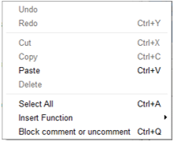

Script editor panel¶
What is the Script editor panel¶
The Script editor panel enables to edit box scripts.
{kind=link}
This editor integrates syntax highlighting to ease the edition.
At the bottom of the panel you can see the number of the selected line on the left and a field to search a specific keyword in the script.
How to open the script of a specific box¶
In the flow diagram, to open the script of any box, right-click on it and select Edit box script.
The script is displayed in the Script editor panel.
Note
For a Python box you can also double-click on it.
Script editor panel functionalities¶
Search functions¶
You have useful functions at the bottom of the panel:
{kind=link}
{kind=link}
{kind=link}
{kind=link}
Script editor functions¶
If you right-click in the panel, the following menu is displayed:
{kind=link}
This contextual menu provides fast access to some classic functions for a script editor:
| Command | Function |
|---|---|
| Undo | Revert last script modification. |
| Redo | Apply previously reverted modification. |
| Cut, Copy, Paste or Delete | Cut, copy, delete selected text block or paste text at the current location of editing cursor. |
| Select All | Select the complete script. |
| Insert Function | Insert a built-in function only available from a box script. |
| Block comment or uncomment | Toggle the current line or the selected text block commented or uncommented. |
Customizing Script editor panel¶
Several options are available in order to customize the Script editor panel:
- Display mono-spaced font,
- Display code folding buttons,
- Display line numbers,
- Wrap text.
For further details, see: Choregraphe preferences.